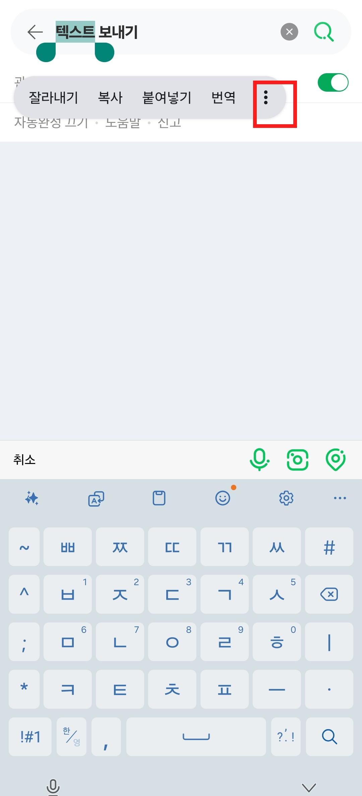
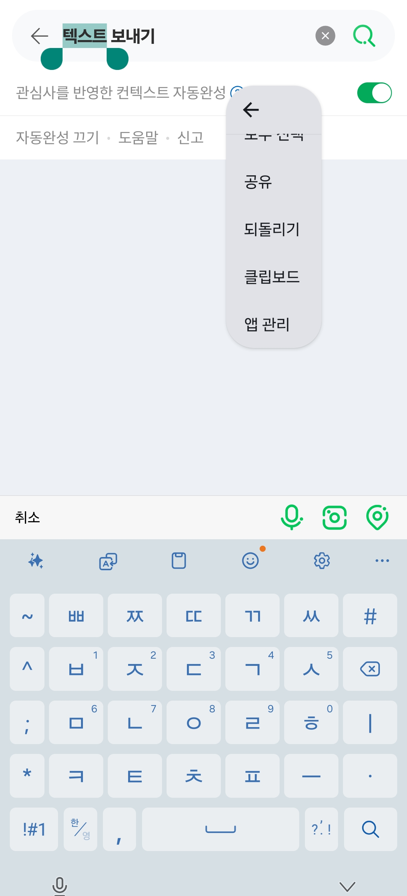
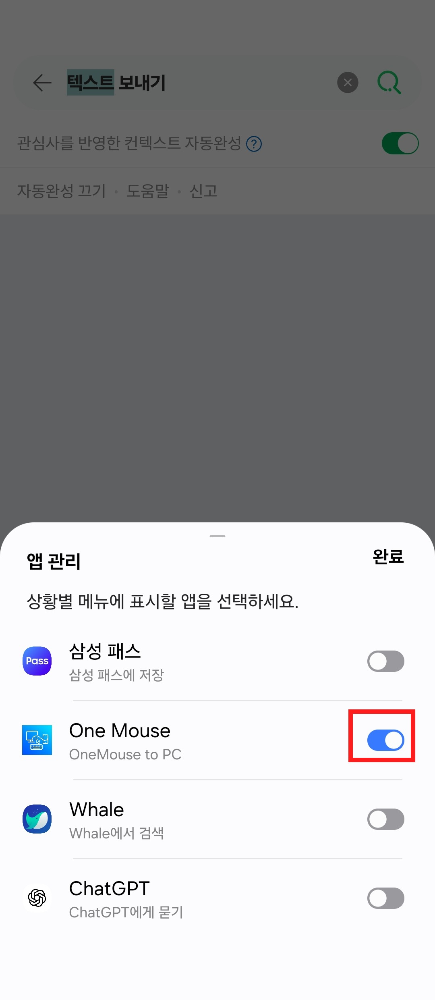
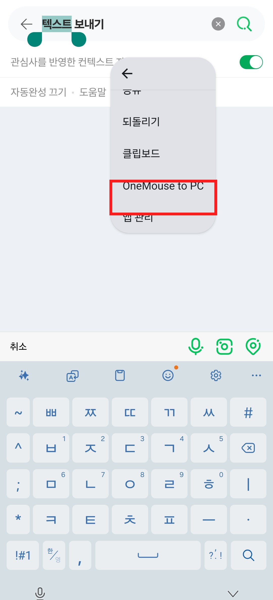
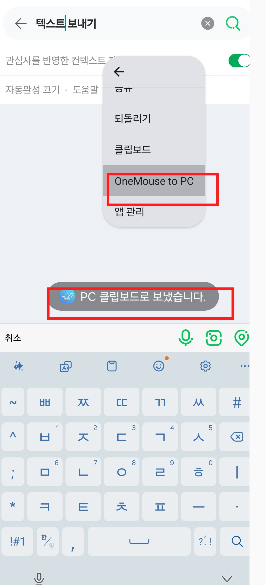

PC 앱을 실행합니다
Windows에서 OneMouse를 켜면 하단에 6자리 페어링 코드와 QR 코드가 표시됩니다.
Guide
최신 앱은 권한을 먼저 켜고, 감지된 PC에서 페어링을 시작하는 흐름으로 정리되었습니다. QR 스캔 또는 6자리 코드로 같은 로컬 네트워크의 PC와 페어링하세요.
Windows에서 OneMouse를 켜면 하단에 6자리 페어링 코드와 QR 코드가 표시됩니다.
입력 제어를 받으려면 접근성 서비스가 먼저 필요합니다. 권한이 꺼져 있으면 페어링 버튼이 설정 화면으로 안내합니다.
같은 Wi-Fi 또는 같은 LAN에서는 mDNS가 우선 동작하고, 필요하면 UDP discovery가 보조합니다.
PC 화면의 QR을 스캔하거나 6자리 코드를 입력합니다. 페어링되지 않은 기기는 연결 버튼 대신 페어링 필요 상태로 남습니다.
모니터 왼쪽, 오른쪽, 위, 아래 중 실제로 커서를 넘길 위치에 Android를 배치합니다. 위치 변경은 PC로 동기화됩니다.
마우스를 배치 방향으로 밀면 Android로 넘어가고, 파일과 텍스트는 선택된 기기 또는 기본 PC로 전송됩니다. 텍스트를 꾹 눌러 선택한 뒤 OneMouse to PC를 누르면 바로 PC 클립보드로 보냅니다.
Wi-Fi
Pairing
Visual Steps
PC에서는 코드와 QR, Android에서는 페어링 버튼, PC에서는 배치 화면을 차례로 확인합니다.


Keyboard Shortcuts
마우스가 Android로 넘어간 상태에서 동작합니다. 앱마다 입력창 처리 방식이 달라 일부 단축키는 앱 정책의 영향을 받을 수 있습니다.
| 단축키 | 동작 | 메모 |
|---|---|---|
| Enter | 검색창에서는 검색/완료를 실행합니다. | 일반 줄바꿈 대신 Android IME의 검색/완료 액션을 우선 보냅니다. |
| Shift + Enter | 입력창에 줄바꿈을 넣습니다. | 채팅이나 긴 문장 입력에서 줄을 나눌 때 사용합니다. |
| Ctrl + A | 현재 입력창의 텍스트를 전체 선택합니다. | 앱이 선택 범위를 직접 노출하지 않는 경우 OneMouse가 선택 상태를 보조합니다. |
| Ctrl + C / X / V | 복사, 잘라내기, 붙여넣기를 실행합니다. | 복사와 잘라내기는 가능하면 PC 클립보드로도 바로 동기화합니다. |
| Shift + 방향키 | 텍스트 선택 범위를 확장합니다. | 일부 앱은 Android 접근성 선택 동작을 제한할 수 있습니다. |
| Alt + ↑ / ↓ | Android 미디어 볼륨을 조절합니다. | 입력창 포커스가 있어도 볼륨 조절을 우선 실행합니다. |
| Alt + Tab | Android 최근 앱 화면을 열고 앱을 전환합니다. | Alt를 누른 채 Tab을 반복하면 다음 앱으로 이동하고, Alt를 떼면 선택합니다. |
| Ctrl + Alt + Backspace | PC로 입력 제어를 강제 복귀합니다. | 커서가 Android 쪽에 남아 있을 때 PC capture를 해제하는 복구 단축키입니다. |
Daily Use
Text to PC
삼성 키보드와 일부 앱에서는 OneMouse to PC가 더보기 메뉴 안에 있습니다. 처음 한 번은 앱 관리에서 One Mouse를 켜야 할 수 있습니다.




